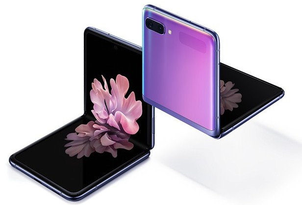
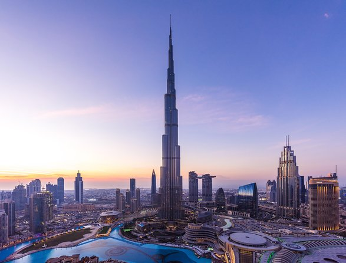
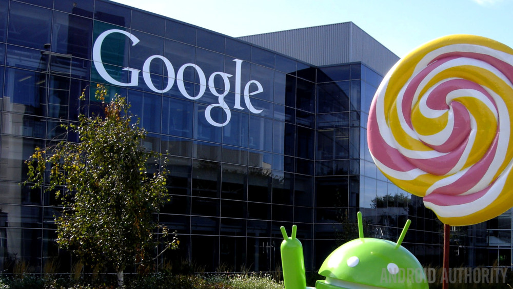
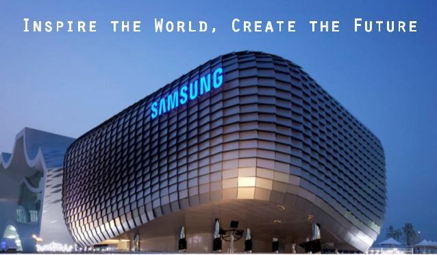
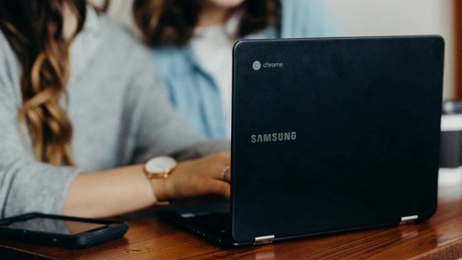

|  |
|
Samsung Engineering Co., Ltd. е едно от дъщерните дружества на Samsung. Тази компания е известна с това, че предлага множество видове инженерни услуги като проектиране, строителство, комбиниране и обществени поръчки. Досега тази компания е работила и е изпълнила успешно множество проекти в около 38 държави в световен мащаб.
Пример за такъв проект е, построената от Samsung Engineering Co., сграда Бурж Халифа, която е най-високата небостъргач в света до момента (2722 фута). Това не е всичко, Samsung също е помогнал в изграждането на други известни небостъргачи като кулите близнаци - Petronas и Taipei 101.
Начало
| 
|

|
В книгата си Dogfight: How Apple and Google Went to War and Started a Revolution, авторът Фред Вогелщайн пише за това, как в края на 2004 г. основателите на Android търсели средства (пари), за да продължат стартирането си. Всички осем членове на екипа на Android заминали за Южна Корея, за да се срещнат с 20 от ръководителите на Samsung. Екипът на Android показал на събралите се ръководители на Samsung плановете си за операционна система, предназначена за мобилни телефони.
Според цитати на съоснователя на Android Анди Рубин, последвалият отговор от екипа на Samsung след презентацията бил пълна тишина. Рубин казва, че екипът на Samsung изразил недоверието си, че такъв малък стартъп ще може да направи този вид операционна система. Рубин добавя: „Изсмяха ми се на излизане от заседателната зала.“
Само две седмици по-късно, в началото на 2005 г., Рубин и екипът на Android се срещат с Google, който решава да ги финансира, влагайки за целта 50 милиона долара. В последствие Google и екипът на Android разработват операционната система и я пускат официално през октомври 2008 г. Можем само да предполагаме какво би било настоящето, ако в онзи съдбовен ден екипът на Samsung беше купил стартирането.
Начало
|

|
- Samsung For Today and Tomorrow (1993–2002)
- Samsung, Everyone's Invited (1999–2005)
- Samsung, Imagine (2005–2007)
- Samsung, Next Is What? (2007–2010)
- Samsung, Turn on Tomorrow (2010–2011)
- That's the wonder of Samsung (2010–2011)
- Samsung, The Next Is Now
- Samsung, The Next Big Thing is Here (2013–2017)
- Do bigger things
- Samsung, Do What You Can't (2017–2020)
- Samsung, Inspire the World, Create the Future (2020–present)
Начало
|
Може да е изненадващо, но Samsung всъщност доставя много собствени продукти на много от своите конкурентни компании. Например Samsung е известен с производството на дисплейни панели, процесори за смартфони, RAM чипове и много други части в своите фабрики. Съобщава се, че Samsung действително доставя RAM, NAND флаш и OLED дисплея на iPhone X.
По този начин Samsung печели около 110 долара за всеки произведен iPhone X. Те всъщност доставят своите дисплейни панели и на много други монитори и телевизионни марки по целия свят. В момента Samsung Electronics е най-големият производител на полупроводници и памет в света.
Начало
|

|